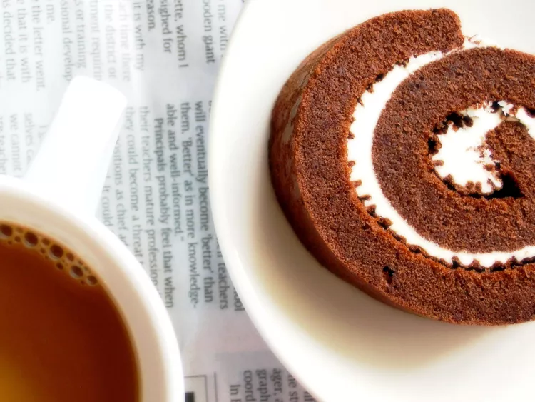

Chocolate Swiss Roll

How to Make Chocolate Cake Roll
This chocolate Swiss roll is a simpler and smaller version of Beth Le
Manach's bûche de Noël. It takes time but is worth the effort.
Rich and tender, this Swiss Roll recipe is a show-stopping dessert perfect
for any occasion. A fluffy and light chocolate sponge cake filled with
homemade whipped cream and then coated in a layer of ganache, this
chocolate cake roll will delight your guests. You won’t believe how easy
it is to make from scratch.
Ingredients
- cooking spray
- ¼ cup all-purpose flour
- ¼ cup cocoa powder, plus more for dusting
- ¼ teaspoon salt
- ⅛ teaspoon baking soda
- 3 large eggs
- ¼ cup white sugar
- ½ teaspoon vanilla extract
- 2 ½ tablespoons melted butter
- ¾ cup heavy cream
- 2 teaspoons powdered sugar
- ½ teaspoon vanilla extract
- ⅛ cup chocolate-hazelnut spread (such as Nutella)
Directions
-
Preheat the oven to 325 degrees F (165 degrees C). Spray a jelly roll or
rimmed sheet pan with cooking spray and line with parchment paper.
-
Make cake: Sift flour, cocoa powder, salt, and baking soda together in a
medium bowl.
-
Beat eggs and sugar in a large bowl with an electric mixer on high speed
until tripled in volume, about 5 minutes. Mix in vanilla. Beat in flour
mixture on low speed in thirds, alternating with melted butter, until
just combined. Pour into the prepared pan (the thickness should be less
than 1/4 inch).
-
Bake in the preheated oven until a toothpick inserted into the center
comes out clean, 8 to 9 minutes. Allow to cool completely.
-
Flip cake upside-down out of the pan onto a new sheet of parchment
paper. Remove the used parchment paper gently from the top of cake. Roll
cake, starting at one end of the paper, into a tube until it is
completely rolled into the parchment. Refrigerate for 2 hours.
-
Make filling: Whip cream, powdered sugar, and vanilla together in a bowl
with an electric mixer until medium peaks form. Mix in
chocolate-hazelnut spread until well combined.
-
Unroll cake and spread evenly with filling. Roll up cake with filling,
keeping in mind that cake might crack or tear easily. Dust with cocoa
powder if you like.